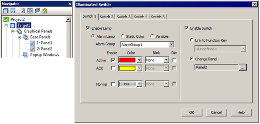
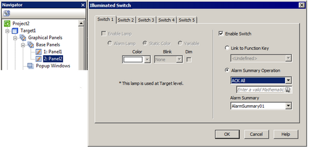

|
|
|
|
|
|
|
|
At the Target node, you can configure the illuminated switch as lamps, in order to monitor or control alarms and variables, or just to illuminate the lamp with a color. You can also configure the illuminated switch as switches, in order to link to target function keys or to change panels.
To set up, first you need to add the illuminated switch driver to your project. For more information, see Section 24.8.1, Adding the Illuminated Switch.
In the Navigator window's Project tab, click the Target node to display its properties.
In the target properties, click on the ellipsis next to the Illuminated Switch to open the Illuminated Switch dialog box.
Configure the settings in the Switch 1 to Switch 5 tabs and click OK.

Enabling the illuminated switch lamps at the Target node disables lamps at the Panel node.
For example, you want to monitor and control an existing alarm group (AlarmGroup1) and its alarm summary (AlarmSummary01) on Panel 2. To do so:
Add an illuminated switch to your project. For more information, see Section 24.8.1, Adding the Illuminated Switch.
Edit and print labels for your illuminated switch as needed. For more information, see Section 24.8.2.1, Illuminated Switch at IO Manager Node.
Click the Target node. In the Property Inspector, click the Illuminated Switch ellipsis to open the Illuminated Switch dialog box.
In the Switch 1 tab, select both the Enable Lamp and Alarm Lamp check boxes; from the Alarm Group list, select AlarmGroup1.
In the Active list, select Enable and choose red for the color.
While still in the Switch 1 tab, select the Enable Switch and Change Panel check boxes. Set Change Panel to Panel 2.
In the Navigator window, click Panel 2; in the Property Inspector, click Illuminated Switch ellipsis to open the Illuminated Switch dialog box.
In Switch 1 tab, select the Enable Switch check box.
Select Alarm Summary Operation, and set it to ACK All and AlarmSummary01. Click OK.


At run time, when an alarm occurs in AlarmGroup1, Switch 1 lamp on the illuminated switch turns red. When you press Switch 1, the following events happen:
The target machine's touch panel changes to Panel 2 and you can view the AlarmSummary01.
Press Switch 1 again, the state of all alarm messages in AlarmSummary01 changes to ACK.
Switch 1 lamp turns off.